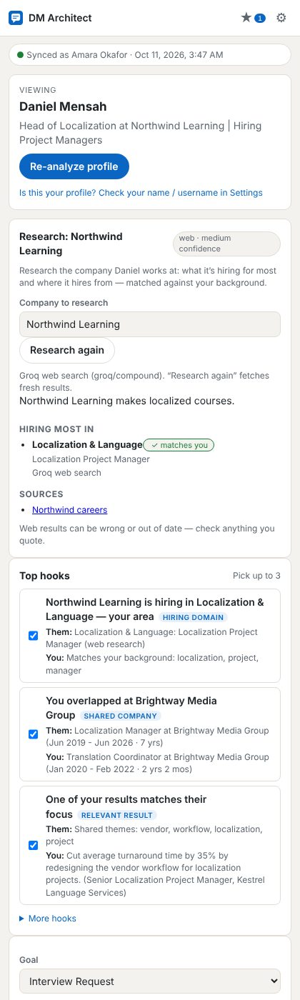
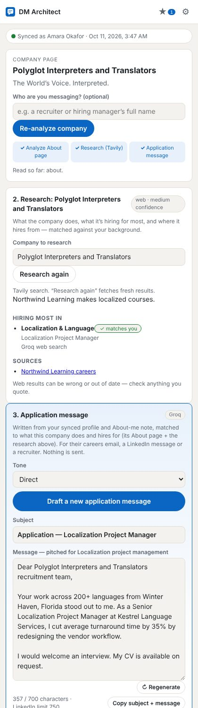

LinkedIn messages that get replies — and interviews.
DM Architect reads the profile or company page you’re on, matches it to your own profile, researches the company, and drafts personalised DMs and application messages. You review, edit and send — nothing is ever sent for you.

How it works
No copying and pasting your CV. The extension reads the page you already have open.
Sync your profile
Open your own LinkedIn profile and click Sync My Profile. It checks the page is yours, then saves your roles, education and skills in your browser.
Open a person or company
On a profile it ranks the strongest openers — shared employers, their posts, hiring signals. On a company page it reads the About tab and researches the company.
Draft, edit, copy
Get three DM drafts, or an application message under LinkedIn’s 750-character limit. Every name and number is fact-checked against the real profiles.
Features
Built for networking that leads to hiring conversations.
Zero-upload profile sync
One click on your own profile. Verified against your name and LinkedIn username.
Hook ranking
Shared companies and schools, recent posts, new roles, hiring areas that match your background.
DMs with a goal
Warm network, value-first, soft opportunity, interview request or peer collaboration — in your tone.
Company flow
Analyze the About page → research with Tavily → draft an application message (≤ 700 characters).
Fact-check
Names or numbers that don’t appear in either profile are highlighted before you send.
Saved drafts
Star your best openers and reuse them as templates — the recipient’s name is never stored.
Free AI
Groq by default (free tier), Gemini as an option, Tavily for research. Model changes are handled automatically.
Private by design
Your data stays in your browser. Profiles you view are never stored. Your API keys go only to the provider you pick.
One-click updates
Check for updates and install them from inside the extension — verified before anything is written.
Install in 2 minutes
DM Architect isn’t on the Chrome Web Store, so you load it yourself — it’s quick.
- Download the zip and unzip it to a folder you’ll keep (e.g.
Documents/DM Architect). Chrome runs it from there, so don’t delete it. - Open
chrome://extensionsin a new tab. - Turn on Developer mode (top-right switch).
- Click Load unpacked and choose the unzipped folder (the one containing
manifest.json). - Pin DM Architect, open it from the toolbar, then in Settings: add your name and a free Groq key (and optionally a Tavily key for company research).
- Open your own LinkedIn profile and click Sync My Profile. Done.

Updates
The extension checks this site once a day and shows a banner when a new version is out.
- In the side panel, open Settings → Updates and click Check for updates.
- Click Install update. The first time, choose the DM Architect folder you installed from — Chrome asks you to allow it.
- The update is downloaded, verified (checksum, name and version) and written into the folder, and the extension reloads itself.
Prefer doing it by hand? Download the new zip, copy its contents over your folder, and click ↻ on DM Architect in chrome://extensions. Your settings, keys and synced profile are kept either way.
FAQ
Is it free?
Yes. The extension is free, and it works with free API keys: Groq for writing (default) and Tavily for company research (1,000 searches a month on the free plan). Without any key it still drafts DMs from built-in templates.
Does it send messages for me?
Never. It only drafts. You review, edit, copy and send each message yourself. There are no bulk actions.
What data leaves my computer?
Only when you click Generate, Research or Draft Application: the needed profile text goes to the AI provider you chose, using your own key. Company research sends only the company’s name and public details. Your synced profile, notes and keys stay in your browser’s storage.
Why isn’t it on the Chrome Web Store?
It’s distributed directly from GitHub, which is why you load it unpacked. Updates are handled inside the extension (Settings → Updates).
LinkedIn changed its layout and something is missing
Click Copy diagnostic report in the panel and share it. It contains only the page structure — no names or profile text — and is used to adapt the extension.
Responsible use. DM Architect reads only the page you have open, only when you click. LinkedIn’s User Agreement restricts automated collection of its data — use it for personal, one-at-a-time outreach.